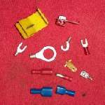
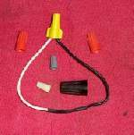

The red rear light that should glow whenever the lights are on stays dark. The brake light may still work. On most bikes the tail light and brake light share one twin-filament bulb, or one LED unit, so a broken tail filament, a corroded holder or a broken wire under the rear mudguard are the common causes. The number plate light usually shares the tail light feed and often fails at the same time.
Is it safe to ride?
By day, with care. At night and in poor weather, drivers behind may not see you. Fix it before riding in the dark.
Quick checks first
- Is the headlight on? Many bikes power the tail light from the same light switch or relay; on some it only works with the engine running.
- Does the brake light still work? Then power and earth reach the lamp, and the tail filament or its wire is the suspect.
- Is the number plate light also out?
- Is the lens cracked, or is there water inside? (The K-Light manual says to check the lens seal on refitting, PDF p. 100.)
Diagnose it step by step
1. Is the tail filament broken? Remove the lens and bulb (Replace a bulb). K-Light 125: tail and brake bulb P21/5W, number plate bulb W5W (PDF pp. 99 to 100). Set the multimeter to continuity (beep). Probe the metal base and the tail light contact (the thinner filament).
- No beep: replace the bulb, fitted the correct way round.
- LED unit (no bulb): go to step 2.
- Bulb good: go to step 2.
2. Does power reach the tail light contact? Bulb out. Key on, lights on (engine running if needed). Meter on DC volts (V with a straight line, 20 V range). Black probe on frame metal, red probe on the tail light contact in the holder.
- Close to battery voltage: go to step 3.
- 0: go to step 4.
3. Is the lamp earth good? Move the black probe from the frame to the lamp's earth wire or metal housing, keeping the red probe on the tail contact (MAVCC uses the same move, PDF p. 315).
- Reading falls to 0: the earth is broken. Clean and tighten earth connections.
- Reading stays: the holder contacts are corroded or bent. Clean them: Clean and seal electrical connectors. Replace a burnt holder.
4Does the number plate light work?
- Yes: both share a feed, so the break is in the short wire from the shared point to the tail light. Look under the mudguard.
- No, both dead: the feed is broken further up. Check the fuse (Check fuses and relays) and the connector where the rear harness joins the main harness, often under the seat. Then follow Test a lighting circuit.
5. Rear harness damaged? Wires to the tail light often pass between the rear mudguard and the frame, where the wheel throws water and stones, and where seats and panels can pinch them. Look for a cut or green, swollen wire. Repair it with Find a wiring fault.
6. LED tail unit with good power and earth? The LED unit has failed. Replace the whole unit. On bikes with lamp monitoring, a dealer can clear any stored warning.
Causes, most likely first
| Cause | How to confirm | Fix |
|---|---|---|
| Tail filament broken | No continuity on tail contact | Replace a bulb |
| Water and corrosion in holder | Green contacts, water in lens | Clean and seal electrical connectors |
| Poor lamp earth | Reading drops with probe on lamp earth | Clean and tighten earth connections |
| Rear harness cut or pinched | Visual, continuity | Find a wiring fault |
| Blown fuse | Meter test | Check fuses and relays |
| Failed LED unit | Power and earth good | Replace unit |
Reference values (K-Light 125)
| Item | Value | Source |
|---|---|---|
| Tail and brake bulb | P21/5W | PDF p. 99 |
| Number plate bulb | W5W | PDF p. 100 |